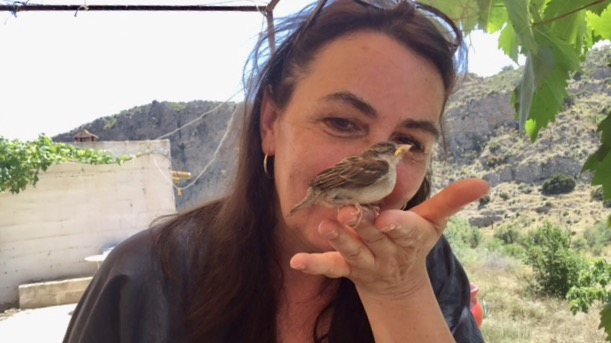

Meet the Tulips Film production Services in Spain
Production Services, Project Development, and Co-Productions in the film industry thrive on teamwork, where synergy brings creative visions to life. I am Karin S. de Boer, specializing in logistical precision, resource optimization, and a collaborative approach to filmmaking.
With years of experience in multi-national productions, I bridge cultural nuances, adapt to diverse workflows, and ensure every detail supports the bigger picture, whether it is assembling the right crew, scouting locations or managing timelines and budgets seamlessly.
People I usually work with: